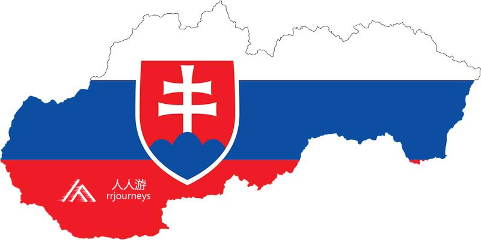
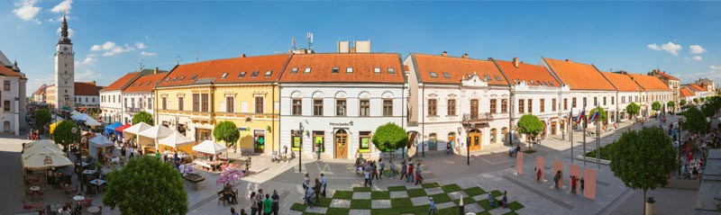
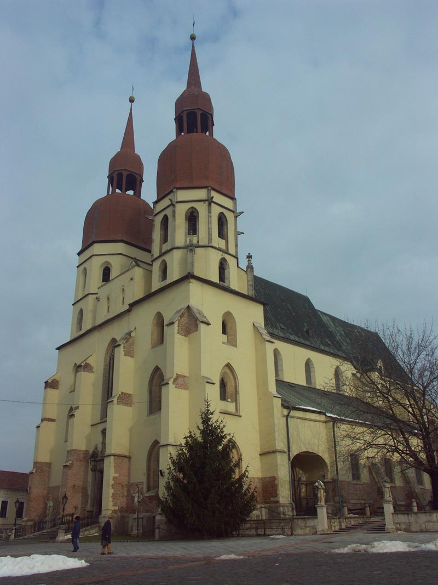
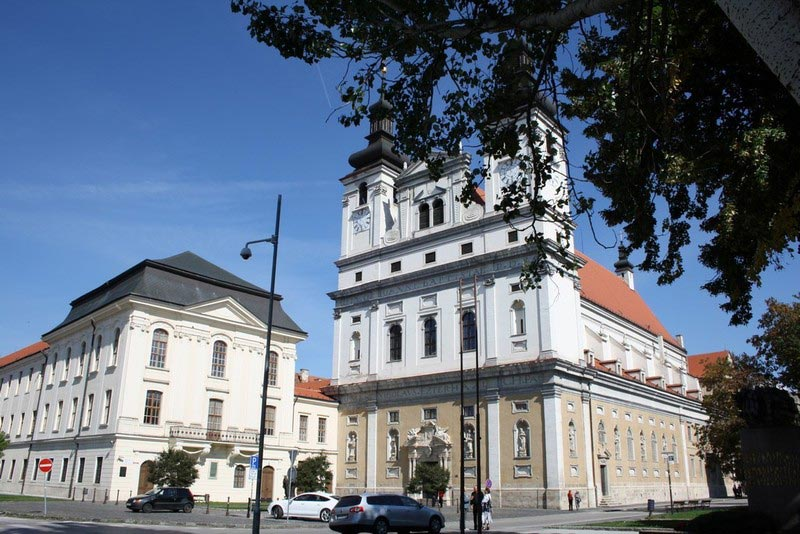
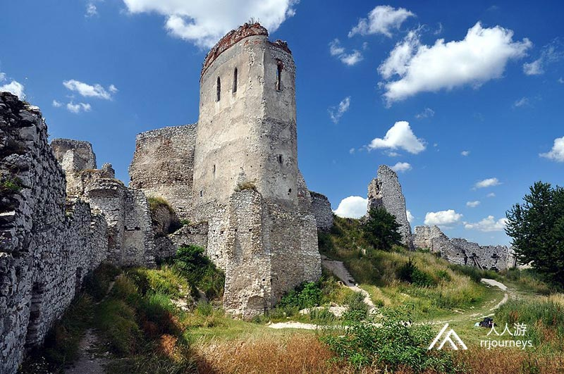
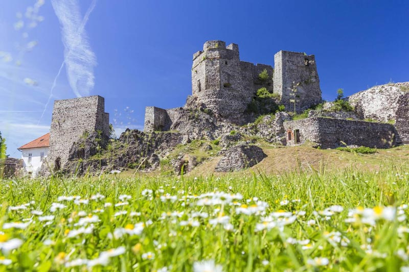
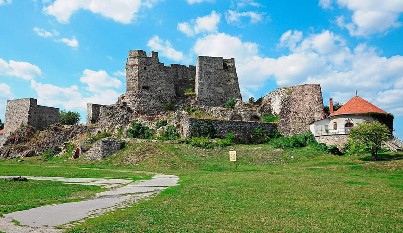
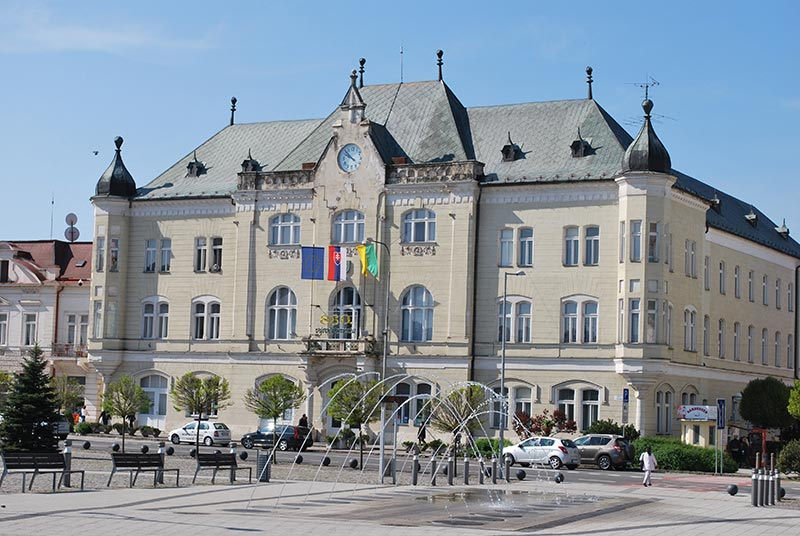
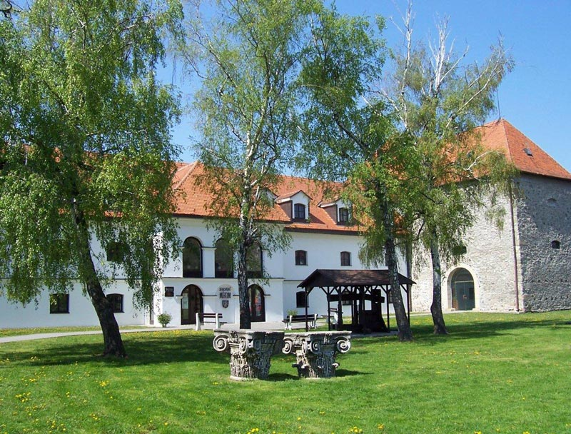

特色旅游
1日游
2-4日游
5-10日游
精品长线旅游
地址：匈牙利 布达佩斯 Budapest-Keleti, 1087
电话：0036-30-9574162
邮件：rrjourneys@gmail.com
网站：http://www.rrjourneys.com
斯洛伐克 斯洛伐克讲斯洛伐克语，全名为斯洛伐克共和国，是一个内陆国家。斯洛伐克的领土面积约49,000平方公里，大部分为山区。人口超过540万，主要由斯洛伐克族裔组成。首都和最大的城市是布拉迪斯拉发，第二大城市是科希策。斯洛伐克的语言斯洛伐克语，全名为斯洛伐克共和国，是一个内陆国家。斯洛伐克的领土面积约49,000平方公里，大部分为山区。人口超过540万，主要由斯洛伐克族 约在5和6个世纪，斯拉夫人就到了现今的斯洛伐克境内。约在10世纪，该领土被并入匈牙利公国，在1000年成为匈牙利王国。1241年蒙古入侵，大部分建筑被摧毁。该地区的恢复和建设归功于匈牙利的贝拉四世。从此德国人成了该地区的重要种族。1989年，天鹅绒革命和平结束了捷克斯洛伐克的共产主义统治。斯洛伐克和平解散后，斯洛伐克于1993年1月1日成为独立国家。 斯洛伐克是高收入的发达经济体，公民自由，新闻自由，互联网自由，民主和平。斯洛伐克公民全民保健，免费教育并且是经合组织中最长的带薪育儿假的国家。该国是欧盟国，欧元区，还是申根国，北约，联合国，经合组织，世贸组织，欧洲核子研究组织，欧安组织，欧洲委员会和维谢格拉德集团。斯洛伐克按人均汽车制造量是世界上最大的国，并且是欧盟第五大汽车生产国，占斯洛伐克工业总产值的43％。

具体行程：
DAY1：布达佩斯-布拉迪斯拉发
入住地点：布拉迪斯拉发
布拉迪斯拉发
布拉迪斯拉发是斯洛伐克的首都。人口约为430,000， 它是欧洲较小的首都之一，但仍然是该国最大的城市。布拉迪斯拉发位于斯洛伐克西南部，多瑙河和莫拉瓦河的左岸。与奥地利和匈牙利接壤，是唯一一个首都与两个国家接壤的主权国家。它是斯洛伐克的政治，文化和经济中心，总统，行政长官和议会的所在地。2017年，布拉迪斯拉发按人均GDP仅次于汉堡和卢森堡市排名为第三。布拉迪斯拉发每年接待约100万游客。这个城市的历史受到许多国家和宗教的影响。从1536年到1783年，这是匈牙利王国的加冕场所，立法中心和首都，也曾是许多斯洛伐克，匈牙利和德国历史人物的住所。 景点：圣伊丽莎白教堂 圣伊丽莎白教堂位于老城东侧。它色彩缤纷马赛克外墙和蓝釉屋顶的装饰，采用了淡雅的浅蓝色，故而俗称“蓝色教堂”。
这座精美的新艺术风格的建筑是为了纪念13世纪时匈牙利国王的安德鲁二世的女儿伊丽莎白公主而建的,她是在这座城市（当时叫普雷斯堡城堡）长大的。圣伊丽莎白教堂是匈牙利分离主义风格。
景点：布拉迪斯拉发城堡 布拉迪斯拉发城堡这座带有四座角楼的大型矩形建筑，坐落在布拉迪斯拉发中部，多瑙河正上方的小喀尔巴阡山脉的一个孤立岩石的山丘上。由于其规模和位置，它已经成为这座城市数百年来的主要特征。土耳其人占领布达佩斯期间，这里是匈牙利王室的避居地。城堡曾在1811年的火灾中被焚毁。20世纪50年代完成了重建。城堡里面还有一座历史博物馆。
景点：主广场，罗兰喷泉及老市政厅
景点：新桥 新桥跨越了多瑙河，将老城和新城连接在一起，是布拉迪斯拉发多瑙河上的第二座桥梁。这座桥建于1972年，石材大部分来自拆除古城中犹太会堂及其它建筑剩余的砖石，南端有一个观景天台。1993年至2012年间，它是世界上最长的一塔和一架斜拉桥。桥塔的西侧支柱设有一个紧急楼梯，有430个楼梯。新桥是一座非对称斜拉桥，主跨长度为303 m，总长度为430.8 m，宽度为21 m，重量为537t。一个特别吸引人的地方是桥的84.6 m塔顶上的飞碟形结构，里面有一个观景台和一间餐厅。餐厅供应传统的斯洛伐克和国际美食，并将其美食描述为“ 地中海人 ”。它在2011年获得了“年度最佳餐厅”奖。 景点：布拉迪斯拉发旗舰店（餐厅） 布拉迪斯拉发旗舰店号称是欧洲最大的餐厅，味道鲜美，食材量大，符合中国人口味。吃货们都说，“到了布拉迪斯拉发，唯一给你留下深刻印象的，就是这个欧洲最大的餐厅”。有很多欧洲当地的居民，为了品尝这家餐厅的美食，甚至不惜开车行驶400公里以上，布拉迪斯拉发旗舰店生产的手工啤酒，色泽浑厚，回香甘甜，也是欧洲最优秀的手工啤酒之一，售价从原来的1.5欧元/升一直上涨到5欧元/升。
DAY2：布拉迪斯拉发-瑙吉松博特
入住地点：瑙吉松博特
瑙吉松博特 特纳瓦又名瑙吉松博特，是斯洛伐克西部的地区性城市，是该国第七大城市。 特纳瓦是斯洛伐克罗马天主教会最重要的中心之一，1541年后，曾是埃斯泰尔戈姆大主教的所在地，自1922年以来是特纳瓦政府的所在地，1977年升为大主教。 史前时代以来，古老的贸易路线的十字路口，特纳瓦河建立了商人定居点。最早的书面记载为1211年。 特纳瓦是当今斯洛伐克第一个获得免费皇家城市特权的城市。匈牙利国王贝洛四世于1238年授予其城堡，并直接给城市特权授予王冠，这使城市得以快速发展的权利。原来的农业中心逐渐开始转为生产，贸易和手工业中心。 匈牙利其他国王加强了该城市的特权地位。特纳瓦是国王的聚会场所，也证明了这座城市的重要地位。 布拉迪斯拉发成为该国的行政中心，特纳瓦接管了该国的文化和宗教中心。 1846年，匈牙利的第一条铁路投入运营。二次世界大战期间，该市经历了巨大的发展，成为斯洛伐克的第三大城市。 特纳瓦称号为“2017年欧洲树木之城”，以表彰他们对绿化的关注以及通过直接在城市环境中密集种植树木来成功解决自然背景不足的问题。2013年的欧洲文化之都称号。  景点：城市塔 城市塔在特纳瓦是一个最重要的文艺复兴时期的城市遗迹。它有一个正方形的平面图，呈大块棱柱形，共有八层，总高度为57米。观景台高约29米。角落和顶层都装饰着五彩缤纷的石头，入口上方的利基处是带有基督象征的圆形浮雕。 该建筑的历史始于1574年，但 1666年和1683年，大火期间，塔楼损失严重，但仍保留了砌体。 塔的顶部原来带有星星和月亮，大概1739年 至 1742年之间，它们被圣母无原罪雕像取代，1791年，它被风撕毁，并被新的镀金铜取代。塔楼立面的最后一次重建 2004年，它恢复了原始的文艺复兴时期外观。塔内有个展览厅，展示了这座城市的历史。 景点：圣尼古拉斯大教堂 圣尼古拉斯教堂（圣尼古拉斯大教堂或粗糙堂）是罗马天主教堂教区教堂。它坐落在当今小镇的东部的罗马式定居点的纺锤形市场上，该地建立在从捷克经过贾布洛尼克和特尔纳瓦的古老贸易路线上，并进一步东南至多瑙河，再从那里到达巴尔干半岛。教堂是献给圣尼古拉斯，商人的守护神。 这是一幢罗马式建筑，1380年 至 1421年间，在其基础上建立了一座哥特式晚期的新教堂。 在教堂北侧是罗马式的教堂圣朱拉娅，它的起源未知的，它一直存在到17世纪初，被新的大教堂圣尼古拉斯取代。教堂长60 m，宽31 m，主教堂中殿高18 m，面向后来建造的圣大教堂。主立面为两塔。北塔是欧洲最大的钟声之一圣米库拉什。 从1543年到1820年，教堂是埃斯泰尔戈姆大主教管区的大教堂大都会教堂。 在大教堂的徽章中，三个苹果代表圣尼古拉斯和两个代表七个悲伤的圣母玛利亚的七角星。  景点：城市水塔 特尔纳瓦的水库是特尔纳瓦的一项重要建筑工作。建于1942年，于1954年投入运行。它位于特尔纳瓦市东部，人工设计的绿洲，带有水库，加油站，游泳池和综合设施的水塔。它的高度为50米，是特尔纳瓦市的主要建筑之一。水库的容量为1200 m3，水位高度为8.0 m。
景点：施洗者圣约翰大教堂 施洗者圣约翰大教堂是特纳瓦的罗马天主教堂。它是特纳瓦大主教管区的教堂教会。 教会是斯洛伐克早期的巴洛克建筑。它构成了大学建筑群的一部分。教堂于1637年被奉献。 单殿两塔神殿，圣殿直接封闭，它的主要入口上方是一个盾牌，上面坐着的天使雕像和埃斯泰尔哈齐家族的石纹徽章。主空间是由带有月牙钩的桶形拱顶构成。 巨大的全木质主坛于1637年完成，高20.3 m，宽14.8 m的祭坛是欧洲同类祭坛中最大的祭坛之一。 内部的粉刷和灰泥装饰，天花板壁画是意大利艺术家的作品。 1977年罗马教皇保罗六世指定了特纳瓦作为大主教的所在地。一年后，圣施洗者约翰由教皇约翰•保罗二世任命为大教堂。它存在的一个重要里程碑是教皇约翰•保罗二世的来访。 布拉迪斯拉发大主教管区于2008年成立，从而取代了特纳瓦教区教堂的地位。 
DAY3：瑙吉松博特-尼特拉-莱维采
返回布达佩斯
尼特拉
尼特拉是斯洛伐克西部的一座城市，位于尼特拉河谷佐伯山脚下。人口约78,353，是斯洛伐克的第五大城市。尼特拉也是斯洛伐克最古老的城市之一。 尼特拉的古迹可追溯到大约25,000-30,000年前。在过去的5,000-7,000年的所有历史时期中，一直有人居住。欧洲的几种考古文化和群体都是以尼特拉文化而命名。大约公元前1600年，城堡山上建立了第一个防御工事。在铁器时代佐伯山上建了一座大型山丘城堡。公元前700-500年卢普卡山和德拉佐夫塞建了一些较小的山丘城堡。从1世纪到5世纪，凯尔特人铸造了银币。罗马时期（公元1至4世纪），公元396年魁北克日耳曼部落在该地区定居并定为首都。
景点：尼特拉城堡
尼特拉城堡位于老城区，是国家文化古迹的象征。它是这座城市的主导者，也是尼特拉教区的所在地。 城堡山上的第一个防御工事可追溯到青铜时代。在公元前1世纪，山丘由凯尔特人定居，直到斯拉夫时代初期7至8世纪。9世纪，斯拉夫人建造了一座巨大的城墙，最初的城墙在11世纪初期被摧毁。同期建了这座城堡。城堡的核心是带有主教官邸的圣埃默拉姆大教堂。大教堂的其他两个部分是14世纪的哥特式上教堂和17世纪的下教堂。几个世纪以来的许多改建，设防和重建工作，完全改变了城堡的原始外观。最接近原始外观的是13世纪上半叶的圣埃梅拉姆大教堂。
恰赫季采
恰赫季采是斯洛伐克西部一个村庄，人口为4,000。该村位于丹努比低地和小喀尔巴阡山脉之间。它以伊丽莎白·巴托里的故居和附近的恰赫季采城堡的废墟而闻名。
景点：恰赫季采城堡
恰赫季采城堡是斯洛伐克的城堡废墟，坐落在拥有稀有植物的小山上。因此小山被宣布为国家级自然保护区。城堡本是一座罗马式城堡，带有一个有趣的马蹄形居住塔楼。后来变成了哥特式城堡。17世纪城堡又增添了文艺复兴时期的装饰。现在城堡遗址被多家电影公司作为拍摄地。 1981年被用于拍摄捷克斯洛伐克喜剧《喀尔巴阡山脉的神秘城堡》,美国广播公司（ABC）的家庭节目《地球上最恐怖的地方》的“血腥伯爵夫人城堡”剧集SyFy频道系列的《捉鬼敢死队国际》《折磨的灵魂》。
1560年出生于匈牙利的伯爵夫人巴斯里伊丽莎白被吉尼斯世界纪录称为“史上杀人最多的女性凶手”。据说她谋杀了多达600名年轻的女孩仆人，以便在她们的血液中沐浴，以保持她的皮肤鲜嫩柔软和年轻。巴斯里伊丽莎白受过良好的教育，富有的家庭背景。1601年至1611年间，巴斯里伊丽莎白被指控以雇佣为借口引诱年轻的农民女孩。她们大多都会遭到殴打，烧伤，折磨和谋杀。并且有人说她曾经参与过食人族的活动。伯爵夫人被囚禁在这座城堡的高塔内直至去世。

莱维采 从新石器时代起，莱维斯的周围地区一直有人居住。 公元前700年左右来自南俄罗斯的草原的生产铁器皿的熟练大师，在领土上定居。大约公元前300年凯尔特人来到了这里。世纪之交，奎德人和马可曼尼人的日耳曼部落从西北部渗透到这里。四世纪，罗马帝国的权力下降，匈奴人从中亚向西推向喀尔巴阡盆地。这一运动已蔓延到各国的普遍移民。5世纪末，古代斯拉夫人的第一个部落定居在此。莱维采第一个书面记载可以追溯到1156年。 18世纪下半叶莱维采成了南部农业地区和手工艺品生产的中心。19世纪小型企业逐渐发展，主要集中在犹太企业家中间的贸易也有所增加，同时中等教育开始发展。  景点：莱维采城堡 莱维采城堡是波赫罗尼南部几个世纪以来最重要的军事和行政中心。城堡建于13世纪末，一个战略保护良好的地点，那里的视野极佳，沼泽地势险峻。它的建立是为了保护斯洛伐克中部的采矿城镇。土耳其战争中，城堡发挥了重要作用。城堡的主人用文艺复兴时期的堡垒加固，拓宽并包围了城堡。1664年，在试图占领城堡的过程中，土耳其人被击败，这使他们停止了对斯洛伐克中部的进一步进攻。这场战争历史上称为“卢维斯大战”。城堡建筑群包括建于16世纪的文艺复兴时期的多博宫，东部塔楼保存完好。 捷夫博物馆位于城堡区。它收藏了该地区的考古，历史，人种学，当地历史和自然历史藏品。  景点：市政厅大楼 19世纪末，莱维采市政府决定用晚浪漫主义元素和匈牙利新艺术风格重建这座城市的市政厅。 1938年，这座城市成为县城所在地，并在大楼内设立了县办公室。在中间窗户上方的立面刻了这座城市的石头徽章。 大楼的下部，提到了6个商业空间：咖啡馆，鞋店， 混合商品。，品牌酒商店，熟食店和香料店。1940年书店和银行取代了商店。  景点:泰克博物馆 泰克博物馆的创建要归功于约瑟夫•内西邮局局长。他捐赠了大量考古文物，人种学文物，绘画，家庭档案和书籍。城市博物馆的收藏逐渐受到城市及周边地区居民，学校和各种机构的捐赠的影响而增长。对博物馆的最大贡献是前皮亚里斯特语法学校的博物馆遗迹以及非洲旅行者莱沃斯的藏品。战争期间，这些收藏品被严重损坏和被盗。 博物馆内永久性展览： 考古学-城堡的历史-药学，社会生活的历史- -民间服装。 
Slovakia: The Beauty of Nature
Right in the heart of Europe, Slovakia is a land of castles and mountains, occasionally punctuated by industrial sprawl. More than a quarter-century after Czechoslovakia's break-up, Slovakia has emerged as a self-assured, independent nation. Capital city Bratislava draws visitors to its resplendent old town and tankard-clanking drinking culture. But Slovakia shines brightest for lovers of history and the outdoors.
时间
地点
景点（可以 +/- ）
入住地点
第一天
布达佩斯出发201公里
布拉迪斯拉发 Bratislava
斯洛伐克
杰文古堡 (权力的游戏电视节目地点), 布拉迪斯拉发城堡, 库米儿, 大主教宫殿, 布拉提斯拉瓦旧市政厅, 圣米哈尔门, 圣伊丽莎白教堂, 斯拉温, 赫维兹多斯拉夫广场, 罗兰喷泉, Danubiana美术馆
第二天
57公里
瑙吉松博特 Trnava
瑙吉松博特: Lednice–Valtice Cultural Landscape, Súsošie Najsvätejšej Trojice, Kráľovská fontána, Nápis TRNAVA, Historická budova, Trnavske rybniky
第三天
48公里
60公里
125公里到布达佩斯
Nitra
莱维采
Levice
尼特拉: 尼特拉城堡, Church of St. Michael the Archangel, Diecézne múzeum v Nitre, 圣宜美拉主教座堂, City park, Corgoň, Ponitrianske múzeum
莱维采: Tekov Museum in Levice, Levice castle, Dobóovský kaštieľ, Kostol svätého Michala archanjela, Kalvária
-
6天5夜乌克兰小众深度游
7天6夜克罗地亚、波黑小众
5天4夜波兰、斯洛伐克小众
四天三夜奥地利、斯洛文尼亚
匈牙利最大的滑雪场一日游
6天5夜，奥地利滑雪自由行
7天6夜，奥地利旅游滑雪自
4天3夜，奥地利滑雪自由行
Copyright 2020 www.rrjourneys.com
人人游 旅游官方网站 版权所有 All Rights Reserved